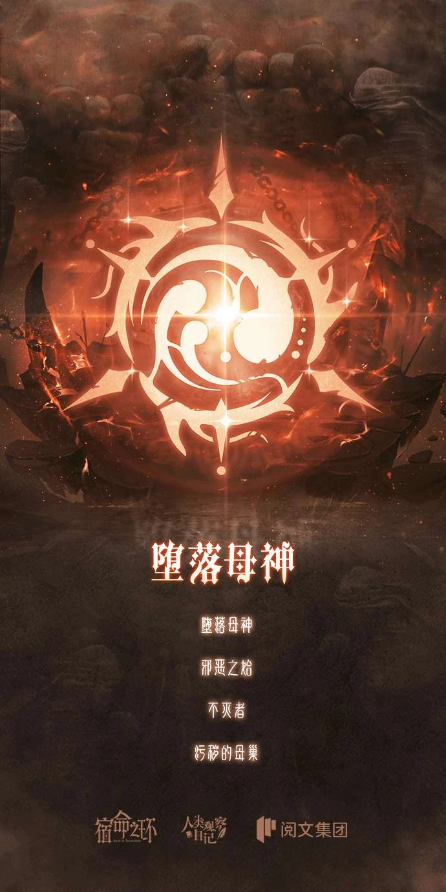

Overview
On the second day, the Oldest One birthed the Mother Goddess of Depravity. Reality gained a foundation, the Spirit World and Astral World were separated, and the River of Fate began to flow.
The Second Day of Genesis, Book 2, chapter 1171
The Mother Goddess of Depravity is one of the Outer Deities from the Cosmos that attempted to invade Earth. "She" is also known as the Primordial Moon, The Great Mother, the Sovereign of the Physical World and the Mother of All Things. "She" has been occupying the Moon since the First Epoch, terraforming it to the Crimson Moon.
"She" is the first child of the Original Creator, and is one of "His" three direct children along with the Mother Tree of Desire and the Son of Chaos.25 "She" is also the ruler of all feminine power of the Cosmos.1Book 1, chapter 1271
"She" was the original owner of the Mother and Moon Pathways. "She" is also the current owner of the Chaos Primogenitor.
"She" is the Sovereign of the Physical World, one of the three Pillars that are the foundation for the universe's maintenance and development.2Book 2, chapter 1090 When the Original Creator split into pieces, "He" created a force strong enough to tear the Sefirot apart. Part of "Her" Sefirah was torn from "Her" and became the Brood Hive, which was attracted to Earth along with the Moon and Mother characteristics "She" held. Then the Mother Goddess of Depravity became not much different from the other Outer Deities, but still with the symbol of Pillar on "Her".
Besides the Mother Goddess of Depravity, the Mother Tree of Desire, and the Son of Chaos who were directly born from the Original Creator, the remaining Outer Deities were all born from the union of the Mother Goddess of Depravity and the Original Creator. "They" are the first batch of beings created by "Her", thus "She" is the true Mother of All Things.2
"She" is said to have a conflict with the Mother Tree of Desire, but "They" have also cooperated.26 27
Honorific Name
Mother Goddess of Depravity
Complete
Mother Goddess of Depravity; Origin of Evil; The Indestructible; Goddess of Origin; Mother of All; Brood Hive of Filth; Sovereign of the Physical World (堕落母神， 邪恶之始， 不灭者， 根源之神， 万物之母， 污秽的母巢， 现实世界的主宰)
Without the Brood Hive
Mother Goddess of Depravity; Origin of Evil; The Indestructible; Sovereign of the Physical World (堕落母神， 邪恶之始， 不灭者， 现实世界的主宰)
Primordial Moon
The one and only Crimson Moon; The Symbol of Life and Beauty; Mother of all Spiritual Forces (独一无二的红月， 生命与美丽的象征， 所有灵性力量的母亲)
Symbols, Authorities & Abilities
"She" possesses full Authority over the Chaos Primogenitor and partial Authority over the Mother and Moon Pathways (through accommodating the Brood Hive but without the Uniquenesses) and the corresponding Symbols, which include but are not limited to the following:
- Mother: Authorities over Mother, Earth, Nature, Death, and Life.
- Moon: Authorities over Summoning, Beauty, Spirituality, Life, Darkness, and Bizarreness with the symbol of the Moon.
- Chaos Primogenitor: Authorities over Reproduction, Propagation, Reality, and the Symbol of Nurturing the nascent Original Creator of the next Universe.5Book 2, chapter 1156
To match the Mother Goddess of Depravity's Honorific Names to "Her" Pathways and Authorities:7Author's WeChat post mgod, part 76
- "Origin of Evil" - Chaos Primogenitor Pathway
- "The Indestructible" - Physical World (Reality) Authority
- "Sovereign of the Physical World" - World Pathway
The Symbols, Authorities, and Abilities "She" possesses and displays at the Above the Sequence level include:
- '''Sovereign of the Physical World (
- A Pillar is slightly stronger but has no fundamental difference compared to the other Great Old Ones. In general, by relying on the unique symbolism of a Pillar, "She" has the status and power to contend with two or three other Great Old Ones at most.8 34
- However, the Mother Goddess of Depravity is invincible as a support. Furthermore, as the wielder of The Indestructible symbolism, except for scenarios where "She" faces the Fourth Pillar, the Original Creator, or overextends the Chaos Primogenitor symbolism, "She" will never perish even when facing hundreds of Great Old Ones at once, and will at most be severely injured.
- '''The Indestructible (
- Reality resists and dissipates Mysticism. For the Mother Goddess of Depravity who wields the symbol of Reality, even though "She" doesn't have a size larger than the instant symbolic influence range, mechanism-wise, "She" cannot be killed by the Death symbolism of the Eternal Darkness.10Author's WeChat post giant_formulas, part 25
- "She" could only perish under the following scenarios:11Book 2, chapter 1161
- Encountering the Original Creator, who could make the impossible happen.
- The emergence of the Fourth Pillar symbolizing the end of everything.
- Overextending the Chaos Primogenitor's unique symbolism.
- As the embodiment of Reality, the Mother Goddess of Depravity getting severely injured can cause Reality to quake, or vice versa in certain scenarios.
- When "She" was injured by the symbolism of the Calamity of Destruction, the entire planet lost its vitality, the stars in the sky dimmed, and tremors reverberated throughout the boundless Cosmos.11
- Through the symbolism of Error, the shaking of Reality can equate with the Sovereign of Reality suffering severe damage.12Author's WeChat post fate_formulas, part 31
- As long as "She" wishes, "She" cannot be Banished or Sealed.9
- "She" can transform into a colossal, ethereal oak tree, rooted deeply in reality, supporting the heavens, and intertwining "Herself" with the fabric of the real universe, to prevent "Herself" from being Banished or Sealed.11
- "She" can "fix" mystical connections, spirits, and consciousness, among other things, in place, disrupting interference and influences from other entities. This is symbolized as an illusory, slightly damaged oak tree.
- The Mother Goddess of Depravity solidified the mystical connection between the Mother Tree of Desire and Tenebrous World, disrupting Klein's Marionettes' attempt to Graft the connection back to themselves.13
- The Mother Goddess of Depravity "fixed" the Goddess of Fate's consciousness and spirit in place, disrupting the Lord of Mysteries Klein's Theft and saving "Her" from the fate of being Sealed into the Chained materials.35
- Unlike the Lord of Mysteries, "She" can't Seal off reality to prevent unauthorized entry or expel all adversaries, however, "She" can impose a continuous weakening effect on targets within reality.9
- As the Sovereign of the Physical World, "She" can be said to possess the authority of '''Foundation (
- '''World (
- This Pathway suppresses the Chained, which has the characteristic of "The body is the prisoner of the World".37
Xiànshí shìjiè de zhǔzǎi): One of the two most vital symbols for the Mother Goddess of Depravity is "Her" symbolism as a Pillar. "She" symbolizes and is the controller of the Physical World''', one of the three layers of the world.
Bù miè zhě): Reality is the foundation of the universe. Unless everything ended, reality would eternally exist. Thus, the Soul and the Body of Mother Goddess of Depravity possessed the characteristic of Indestructibility'''.9Book 2, chapter 1164
Gēnjī), making all Outer Deities rely on "Her" for "Their" existence, which is why "She" cannot be Destroyed or Sealed'''.36
Shìjiè): The Sequence 0 of the Pathway of Reality and Procreation, and the cornerstone of the Sovereign of the Physical World''' symbolism.7 6
- '''Nurturer of the Chaos Primogenitor (
- '''Chaos (
- '''Origin of Evil (
- The Chaos Primogenitor, once born, doesn't belong to "Her" anymore. At the moment, "She" can borrow "Its" power.39 However, "It" doesn't bring only benefits to the "Her", but also burdens the mother's body as an infant would.40
- "She" can invoke the special symbolism of the Chaos Primogenitor once every Major Month (2,160 years).
- The normal heartbeats of the Chaos Primogenitor helped "Her" accelerate the accommodation of the rebelling Brood Hive, despite being disrupted by the countless Marionettes and Avatars from the Lord of Mysteries.5 41
- The extremely special heartbeat of the Chaos Primogenitor about to be born and "Its" imminent entry into reality shattered the Astral Barrier that originated from the Original Creator, as if its original master had recalled it.14
- Invoking this special symbolism would put "Her" in a state of prolonged weakness for centuries14 that cannot be recovered using New Life.11
- If "She" borrowed this special symbolism for less than 2,160 years, the Chaos Primogenitor would truly descend into the real world - a devastating catastrophe to "Her",14 and could cause "Her" to perish despite the symbolism of The Indestructible.11
- The Lord of Mysteries, Demon of Knowledge, and Son of Chaos joining force can extend the Chaos Primogenitor's cooldown by modifying the Major Month. However, "They" could extend it by one Major Year at most.42
- "She" has the ability to actively give birth to the Chaos Primogenitor.43
Hùndùn yuán tāi): The Chaos Primogenitor is the Original Sin''' and the nascent Original Creator of the next universe. Nurturing "It" is one of "Her" two most vital symbols, and a key reason "She" remains a Pillar even after the Brood Hive's separation.5 14Book 2, chapter 1157
Hùndùn): As one of the three direct children of the Original Creator, the Mother Goddess of Depravity inherently possesses the Chaos quality of the Original Creator. The Chaos Primogenitor denotes this Chaos''' aspect.38
Xié'è zhī shǐ): The Pathway of the Chaos Primogenitor is the Pathway of Evil and Corruption, which includes the Exploitation of Life.6 As such, "She" possesses the corresponding Honorific Name and symbolism of the Origin of Evil'''.
- '''Genesis (
- '''Motherhood/Maternal Instinct (
- Excluding the Mother Tree of Desire and the Son of Chaos, "Her" union with the Original Creator gave birth to all other Outer Deities. "They" are the first batch of beings created by "Her", thus "She" is the true Mother of All Things and '''The Great Mother (
- The Goddess of Origin, Mother of All Things, and Brood Hive of Filth symbols were separated from "Her" during the Original Creator's awakening in the First Epoch and got attracted to Earth, along with the Moon and Mother Pathways. These symbols later self-completed into the Sefirah Brood Hive.3
- "She" reaccommodated the Brood Hive during The Apocalypse, but did not retrieve the the Uniqueness of Mother and the Uniqueness of Moon.
- In the First Epoch, the Primordial God Almighty and the Brood Hive gave birth to Omebella and Zedus, making certain arrangements. In The Day of Many Disasters, the birth of Omebella strengthened the symbolism of the Mother in mysticism, allowing the Mother Goddess of Depravity to bypass the Astral Barrier to descend on Earth.46
- Humans were created by the Original Creator and the Mother Goddess of Depravity.47
- "She" is the source of every single Mother Goddess-type deity of any religion in the history of Pre-Epoch Earth.15Author's WeChat post mgod, part 22
- "She" had once united with a planet in ancient times, birthing three divine offspring that rule over the corresponding civilization.16Book 2, chapter 1129
- '''Goddess of Origin (
- If the Mother Goddess of Depravity obtains the the Uniqueness of Demoness, it will lead to the Buddhist's concept of the Cycle of Four Kalpas: Formation, Continuance, Decline, Disintegration.48
- '''New Life (
- Using New Life on "Herself":
- Rebirth: "She" can initiate New Life to reset "Her" form, reverting "Herself" to an embryonic state for Rebirth. This process would reset all symbols associated with "Her", except those intrinsic to "Her" being, erasing external mystical correspondences.11
- If "She" used Rebirth during the process of accommodating the Brood Hive, this would reset "Her" progress to zero.
- "She" is capable of accelerating the reconstruction of the Mirror World to its original stability through Rebirth.49
- Every part of the Mother Goddess of Depravity was in a state of constant New Life, including "Her" soul, consciousness, spirit, and intellect. This caused "Her" to recover "Her" intellect as soon as "She" became Foolish, rendering "Her" immune to the core symbolism of the Lord of Mysteries.18Book 2, chapter 1176
- Using New Life on others' consciousnesses:
- The natural influence of "Her" symbolism let all the consciousnesses within Calamity of Destruction Lumian to gain New Life, including that of Cheek, Tudor, the Primordial God Almighty, the divided Mirrored Original Creator, and the Malevolent Dragon.8Book 2, chapter 1160
- Grisha Adam was bathed in crimson moonlight, bringing New Life to all consciousnesses within "Him", including that of Herabergen, Leodero, and the Primordial God Almighty.13Book 2, chapter 116950
- Using New Life on others' Beyonder powers:
- The interferences from the Eternal Blazing Sun, Evernight Goddess, Earth Mother, God of Steam and Machinery, and God of Knowledge and Wisdom in Bethel Abraham's apotheosis ritual were all given New Life, no longer able to be controlled by their original owners.51
- A portion of the billions of Marionettes under the Lord of Mysteries Klein's control gained New Life and consciousness, ceasing to be mere puppets and starting to resist his control. Many Marionettes attempted to use various abilities, but the majority of these powers betrayed their original owners, instead destroying them.19Book 2, chapter 1151
- Each strand of the Lord of Storms' lightning form was tainted scarlet, gaining New Life as they detached and scattered, killing "Him".52
- Corruption:
- "Her" corruption can create a new personality, not just amplify the evil traits of the original personality. This is what happened to Bethel Abraham.53
- "Her" corruption will still remain even after a Black Emperor dies and revives through the Astral World, accompanying "Their" resurrection with corruption that has gained New Life.20
- "Her" symbolic nature would continue to influence the surrounding area even when "She" hesitates to attack due to other entities' influences, such as Charm from the Calamity of Destruction.8
- The symbolism of New Life has immensely powerful healing properties, "She" can quickly heal "Herself" and other Great Old Ones' wounds.11 18 13
- Only certain symbols and concepts would weaken the effectiveness of New Life, such as the symbol of Destruction13 and the power of Termination.21Book 2, chapter 1174
- The dead affected by the “new tide of Life" on the Primitive Island would be Resurrected with New Life, possessing a certain will and vitality, and even a Spirit after being repeatedly affected by it would oddly develop some sort of sentience and come “alive”.54
Chuàng shēng): The God Almighty and the Mother Goddess of Depravity both hold part of the Genesis symbolism - opposing the Termination''' symbolism of the Fourth Pillar44 - with the God Almighty holding a larger share.45
Mǔxìng) / Mother of All Things ( Wànwù zhī mǔ)''':
Wěidà mǔqīn)'''.2
Gēnyuán zhī shén): From the Origin it comes, to the Origin''' it returns.17Author's WeChat post mother_abilities
Xīnshēng): "She" can use the symbolism of New Life''' on "Herself", Souls, consciousness, spirits, intellect, and Beyonder powers.
- '''The Feminine (
- When the Mother Goddess of Depravity lost the Brood Hive during the Original Creator's awakening in the First Epoch, it caused the birth of Life and the Feminine powers in the entire universe to undergo a certain anomaly.3
- However, thousands of years of time at astronomical scales is a very short period of time, and the corresponding influence hasn't spread.
- Even though the Demoness isn't neighboring to the Mother and Moon Pathways, the Oldest One's Feminine Aspect and the Universe's Feminine Aspect are, to some extent, equivalent, leading to convergence without causing excessive madness compared to other pathways, similar to to the effect of combining Beauty Goddess and Naturewalker in a 3 + 1 setup.56
Yīnxìng) Aspect of The Universe: Unlike the Masculine Side of the Universe which is very scattered, the Mother Goddess of Depravity is the master of all Feminine Forces of the Universe'''.55
- '''Spirit Body and Spirituality (
- Reincarnation Cycle: The Mother Goddess of Depravity and the Eternal Darkness have overlapping authority over Spirits. Merging "Them" together would create a cycle like Reincarnation and Rebirth.58
- The emergence of the Eternal Darkness allows the previously wandering Souls on Earth in the Spirit World to finally have Eternal Rest in the River of Eternal Darkness, but without the Mother Goddess of Depravity's symbolism, the Reincarnation Cycle will not be complete.59
- The Mother Goddess of Depravity's Chaos Primogenitor is Compatible with the three Pathways under the River of Eternal Darkness since there's an inherent connection between Life and Spirit. "She" can accommodate any of the three Uniquenesses under the River of Eternal Darkness to complete the full Cycle of Reincarnation. Acquiring only one is sufficient, more would be dangerous because the Physical World would descend completely into madness.60
- A complete Mother Goddess of Depravity can no longer accommodate any Uniqueness under the River of Eternal Darkness because "She" would exceed the limitation, but "She" could still control them and use them for completion.
- Paramita: "Her" Divine Kingdom is a Paramita.
- If the parts related to Death, Spirits, and Reincarnation are completed, it would become part of Reality, altering the state of the entire universe.61
Líng tǐ língxìng): "She" represents the destinations of Spirits''' and is "Their" master. This is an authority that overlaps with the Death and Darkness.57
- '''Moon (
- The Moon concept in the Astral World was jointly occupied by the Mother Goddess of Depravity and the Brood Hive. As a result, it was impossible to complete the Moon.62
- "She" is able to make a Blood Moon to suddenly descend into the Astral World, illuminating all the distorted concepts there, as well as preventing any Deity from escaping.63
- '''Beauty (
Yuèliàng): The Moon itself is more akin to a symbolism than to an authority. Just as the Moon is Earth's companion, the Mother is the first companion of all life. This is the Moon's''' most essential aspect.22Author's WeChat post moon_abilities
Měi): Beauty is derived from the Moon and Femininity, and the Brood Hive is the most Beautiful thing in the universe.22 By possessing the Brood Hive, the Mother Goddess of Depravity is the symbol of Beauty – a concept that equaled Beauty itself,11 radiating an unmistakable Maternal''' brilliance.8
- '''Brood Hive of Filth (
- Death: "She" holds the symbolism of Death, corresponding to the symbols of Goddess of Origin and Brood Hive of Filth.
- Returning to the Origin is Death, while the Brood Hive of Filth part of this symbolism points towards Pollution, Loss of Control, and Bodily Mutation.17
- "She" can influence other entities to wither, collapsing into Death and returning to the embrace of Mother Earth.
Wūhuì de mǔ cháo): By possessing the Brood Hive, "She" holds the corresponding symbolism of Brood Hive of Filth'''.17
- Reverse Corruption: As a Great Old One, those without sufficient rank who discover "Her" existence will be Corrupted—manifestations of this Corruption include sprouting genitalia, staining blood-red, or swelling as fetuses prepare to tear their way out of their body.64
Countering Symbols, Authorities & Abilities
Certain Symbols, Authorities, and Abilities of other Great Old Ones can counter some of "Her" powers, which include but are not limited to the following:
- Calamity of Destruction:
- Destruction counteracts New Life.
- Wounds and compound weaknesses dealt to "Her" would take longer to heal under the influence of the symbolism of Destruction.11 13
- Masculinity mutually counteracts with Femininity. 65
- For example, the Calamity of Destruction cannot turn a weakened Mother Goddess of Depravity into a male, and vice versa.
- Lord of Mysteries:
- History, Fooling, and Error can inflict severe damage to the Sovereign of the Physical World.
- The Lord of Mysteries could use the symbolism of History to summon the History of Reality being shaken during The Apocalypse war, then employ the symbolism of Fooling to blur the lines between History and Reality, and then uses the symbolism of Error to equate the shaking of Reality with the Sovereign of the Physical World suffering severe damage, thereby inflicting heavy losses on the Mother Goddess of Depravity. However, this isn't enough to kill or Seal "Her".12
Appearance
On the Moon: "She" occupies the moon and interferes with the earth through the shared identity of Primordial Moon. It appeared that the moon had a crimson sea flowing on its surface. It appears to be drowning everything, as though it was digesting this huge natural satellite. This blood-colored sea boiled when Klein learned about the news of "Great Old Ones", "Outer Deities", and "Cosmos".66 When Amon repelled "Her" power using the First Blasphemy Slate, the crimson moon appeared in the sky. The color quickly faded and turned pure. On it was a huge, distorted, crimson figure.67
True Form of the Mother Goddess of Depravity:
- Without the Brood Hive: A colossal winged female composed of stacked reproductive organs.15
- With the Brood Hive: "She" is composed of countless birthing organs haphazardly piled together, with swirling smoke and crimson moonlight intertwining to form an accretion-disk-like extension that served as clothing. Yet, this massive figure had a head resembling that of a human woman. "Her" features - facial structure, long brown hair, and crimson eyes - were flawless, embodying the very concept of "beauty". "She" was the symbol of beauty in the universe, radiating an unmistakable maternal brilliance.8 15
History
Genesis
On the first day, the Original Creator awoke and created this world, but Reality, the Spirit World, the Astral World, and Fate were still mixed together.
On the second day, the Oldest One birthed the Mother Goddess of Depravity. Reality gained a foundation, the Spirit World and Astral World were separated, and the River of Fate began to flow. Soon after, the Mother Tree of Desire was born, giving rise to life and introducing evil and desire. Then came the Son of Chaos, who established order-and with it, shadows naturally emerged.23Book 2, chapter 1171
On the third day, the Oldest One and the Mother Goddess united, and the Mother of All Things gave birth to a firstborn daughter, the Goddess of Fate. From then on, the fates of all things began to intertwine, no longer in absolute chaos but instead forming relative patterns and foreseeable futures.23
After the Goddess of Fate, the other Outer Deities were born one after another from the union between the Original Creator and the Mother Goddess of Depravity,2Book 2, chapter 109068 with the Circle of Inevitability as "Their" eldest son.24
Pre-Epoch
In the Pre-Epoch, the Outer Deities exerted influence on Earth, but did not dare to overly influence.69 The Mother Goddess of Depravity already had worshippers on Earth. "She" was the source of every single Mother Goddess-type deity of any religion in the history of Earth,70 and was worshipped everywhere under the image of the Great Mother Goddess.71
Before the First Epoch, the Circle of Inevitability and the Goddess of Fate frequently fought each other.72 Even though the Mother Goddess of Depravity favored the Goddess of Fate, the reason why "She" didn't help "Her" was because the universe needed the Circle of Inevitability's Redemption Symbolism.73
First Epoch
As one of the direct children of the Original Creator, the Mother Goddess of Depravity was the most affected by the Law of Convergence when the Original Creator awakened in the Pre-Epoch, causing part of "Her" Sefirah (later self-completed into the Brood Hive) and the two Pathways of Moon and Mother to be separated from "Her" and were attracted to Earth.
During the Lost Era, the Primordial God Almighty and Celestial Worthy's strong and still-perfect-and-whole power deterred the Outer Deities, who can only settle for observing Earth from afar for now.74
Lord of Mysteries
Mr. Door has suggested a few times that Roselle should visit the moon, and indicated that the moon has answers to many things. Roselle heeded his advice and was corrupted during his visit.75
It is also suspected by Klein that she is responsible for corrupting Roselle.76 This was later confirmed.20Book 1, chapter 1307
After the corruption, Roselle created the Cards of Blasphemy that possess high-level anti-divination and anti-prophecy abilities. Roselle told Klein to be wary of the Mother Card since it has a trap set by "Her". Roselle also warned that when all 22 Cards of Blasphemy are collected, something bad will happen which is most likely caused by "Her" influence.20
Circle of Inevitability
"She" possesses the authority of the Chaos Primogenitor and is worshipped by various factions under the name "The Great Mother". Some believe that all creatures in the world are the children of the Great Mother. They were directly transformed from the flesh and blood of the Great Mother.77
Since The Fool entered "His" slumber, the Outer Deities had advanced "Their" infiltration of Earth. The Mother Goddess of Depravity was the most prolific amongst "Them", managing to corrupt many members of the Sanguines and Church of the Earth Mother, including Father Montserrat. The Nightstalkers, a secret organization worshipping the Great Mother, was established in the Intis Republic.
The Mother Goddess of Depravity also cooperated with the Eternal Blazing Sun on certain matters, causing Lady Moon to become pregnant with a divine child from the Eternal Blazing Sun. However, it was revealed later on that the Eternal Blazing Sun chose to instead assist Red Angel Medici's bid in becoming the Calamity of Destruction instead, refusing to bow to neither "Her" nor Adam due to "His" pride. However, "She" had already created a symbolic bond between "Him" and Omebella, which may have been "Her" goal in the first place.
Anyone who attempts to take advantage of "Her" seems to be taken advantage of instead...
Madam Magician, Book 2, chapter 1019
During Project Vortex, "She traded the corruption inside Roselle Gustav for the Shadow of the Beauty Goddess held by the Rose School of Thought, with the corruption being used to strip the Chained God of "His" last Abomination characteristic to give birth to Tirié.
"She" was active in The Fool's Dream, running Mushoku Hospital alongside the Mother Tree of Desire. Together, "They" stored the various traumas of Klein in the basement, and "She" granted New Life to the corpse of Panatiya in cooperation with the Celestial Worthy of Heaven and Earth for Blessings. However, "She" would later betray "Him" by siding with the Primordial God Almighty instead, and withdraw from the Dream alongside the Mother Tree of Desire.
According to "Her" contract with the Primordial God Almighty, "He" would help "Her" reclaim the Goddess of Origin Authorities using Omebella, and "She" would help "Him" revive. In addition, "She" entered a contract with the Mother Tree of Desire and witnessed by the Primordial God Almighty, where the Mother Tree of Desire would sacrifice the Tree of Shadow to help the Mother Goddess of Depravity descend on Earth in The Day of Many Disasters. In return, the Mother Goddess of Depravity would need to give assistance to the Mother Tree of Desire later.
After The Day of Many Disasters, the Mother Goddess of Depravity had descended onto Earth and aimed for the Brood Hive in the Western Continent. The Fool exploited "Her" instinctual desire, lured "Her" to breach the Celestial Worthy's barrier sealing the Western Continent, then reinforced the seal; while the Western Continent's Celestial Master and others continued burning "Their" life forces and utilizing the powers of the Sefirot to sustain the barrier for almost a year. Eventually, the Mother Goddess of Depravity captured the Brood Hive within the gray-white fog sealing the Western Continent 2 months before the Death of Primordial Demoness. The Brood Hive yearns to see "Its" eldest daughter, Omebella, truly reborn, but "It" resists re-merging with the Mother Goddess of Depravity. The two were locked in a fierce struggle. Both the World of Ruins and the Western Continent attained a fleeting peace, with only the naturally dissipating forces and maternal symbolism still exerting their effects.78
When The Apocalypse began, Lumian destroyed both the Gift of the Land and Lilith to symbolically killed Omebella, who is the link between the Mother Goddess of Depravity and the Brood Hive.79 Because of this, the Brood Hive, whose dissipating consciousness had been rekindled by intense hatred and mystical stimulation, reassembled and became active once more, delaying the complete fusion between "It" and the Mother Goddess of Depravity.80 Klein Moretti, who had become a complete Lord of Mysteries, disrupted "Her" further by sending hundreds of billions of Marionettes "Her" way.19
The Mother Goddess of Depravity used the authority of the Chaos Primogenitor to fasten "Her" accommodation of the Brood Hive. During the critical moment, "She" utilized the special heartbeat of the Chaos Primogenitor about to be born and "Its" imminent entry into reality to instantly finish accommodating the Brood Hive, which also shattered the Astral Barrier.14
After Lumian Lee became the Calamity of Destruction, "He" used his mystical link and similarities to the Mother Goddess of Depravity and damaged himself to deal "Her" a critical blow. Afraid that Lumian's death and loss of balance would unleash the Mirrored Original Creator, which would reflect back on "Her" through the mystical connection and might cause the birth of the Chaos Primogenitor, the Mother Goddess of Depravity healed Lumian, then temporarily retreated away from the battlefield to heal "Her" injuries.
During the latter stage of the battle between Earth's Above the Sequences and the Outer Deities, the Mother Goddess of Depravity had recovered enough to influence the battlefield remotely. When the Mother Tree of Desire was heavily injured by Farbauti and the Master of the Shadow Cottage's self-curse, "She" exploited the cursed mystical connection to drag "Herself" toward the Tenebrous World battlefield. Klein attempted to Grafted back the connection, but failed due to the Mother Goddess of Depravity's intervention, making the Mother Tree of Desire successfully escape with the Tenebrous World. The Mother Goddess of Depravity also targeted Adam with New Life, which worsened "His" condition and caused the Primordial God Almighty to further awakened. After Klein incapacitated both the Supernova Dominator and the Goddess of Fate, the Mother Goddess of Depravity saved the Goddess of Fate from being Sealed.
Towards the end of the battle, the Mother Goddess of Depravity descended directly again, and fought briefly against Klein before he proposed a temporary truce. Klein then created a Loophole in "Her" contract with the Primordial God Almighty, allowing "Her" to avoid fulfilling "Her" end of the bargain immediately. "She" left the solar system alongside all "Her" children apart from Supernova Dominator, who had been Sealed by Klein previously. However, the contract was still in effect, meaning "She" would have to return some time in the future to help the Primordial God Almighty revive.
Trivia
- After hearing Fors Wall's story of wandering on a planet where the inhabitants worshiped the Mother Goddess of Depravity, Lumian Lee speculated that perhaps like the World of Ruins, the Mother Goddess of Depravity's true domain is like this—devoid of civilization but teeming with Mythical Creatures. On the other hand, planets worshiping "Her" elsewhere might still foster civilizations.16
Translations
| Language | Name |
|---|---|
| English | Mother Goddess of Depravity Primordial Moon |
| Chinese | 堕落母神 原始月亮 |
| Thai | เทพมารดาแห่งความต่ำทราม ดวงจันทร์บรรพกาล |
References
- Book 1, chapter 1271.
- Book 2, chapter 1090.
- Book 1, chapter 1347.
- Author's WeChat post mgod.
- Book 2, chapter 1156.
- Author's WeChat post mgod, part 17.
- Author's WeChat post mgod, part 7.
- Book 2, chapter 1160.
- Book 2, chapter 1164.
- Author's WeChat post giant_formulas, part 25.
- Book 2, chapter 1161.
- Author's WeChat post fate_formulas, part 31.
- Book 2, chapter 1169.
- Book 2, chapter 1157.
- Author's WeChat post mgod, part 22.
- Book 2, chapter 1129.
- Author's WeChat post mother_abilities.
- Book 2, chapter 1176.
- Book 2, chapter 1151.
- Book 1, chapter 1307.
- Book 2, chapter 1174.
- Author's WeChat post moon_abilities.
- Book 2, chapter 1171.
- Book 2, chapter 1171.
- Book 1, chapter 1000.
- Book 1, chapter 1233.
- Author's WeChat post sd, part 2.
- Book 1, chapter 352.
- Author's WeChat post um, part 4.
- Author's WeChat post mgod, part 1.
- Author's WeChat post mgod, part 2.
- Author's WeChat post mgod, part 25.
- Author's WeChat post ph, part 18.
- Book 2, chapter 1173.
- Author's WeChat post moon_formulas, part 44.
- Author's WeChat post abyss_abilities, part 12.
- Author's WeChat post um, part 9.
- Author's WeChat post sun_abilities, part 51.
- Author's WeChat post beauty_goddess, part 24.
- Book 2, chapter 1153.
- Author's WeChat post justiciar_abilities, part 1.
- Author's WeChat post death_rituals, part 38.
- Book 2, chapter 1174.
- Author's WeChat post sun_abilities, part 27.
- Book 2, chapter 1115.
- Author's WeChat post mother_formulas, part 8.
- Author's WeChat post fool_authorities, part 44.
- Book 2, chapter 1132.
- Book 2, chapter 1170.
- Book 1, chapter 1352.
- Book 2, chapter 1158.
- Author's WeChat post moon_formulas, part 16.
- Book 1, chapter 1301.
- Author's WeChat post beauty_goddess, part 7.
- Author's WeChat post fate_formulas, part 54.
- Author's WeChat post sleepless_abilities.
- Author's WeChat post darkness_abilities, part 12.
- Author's WeChat post sd, part 12.
- Author's WeChat post chained_abilities, part 8.
- Author's WeChat post red_priest, part 45.
- Author's WeChat post moon_formulas, part 13.
- Book 2, chapter 1069.
- Book 2, chapter 1154.
- Author's WeChat post beauty_goddess, part 29.
- Book 1, chapter 1223.
- Book 1, chapter 1353.
- Author's WeChat post um, part 8.
- Author's WeChat post error_formulas, part 23.
- Author's WeChat post mgod, part 22.
- Author's WeChat post ph, part 22.
- Author's WeChat post mtod, part 2.
- Author's WeChat post coi, part 34.
- Author's WeChat post history.
- Book 1, chapter 767.
- Book 1, chapter 1291.
- Book 2, chapter 607.
- Book 2, chapter 1120.
- Book 2, chapter 1121.
- Book 2, chapter 1150.
Source
Article adapted from the Mother Goddess of Depravity article on the Lord of the Mysteries Fandom wiki (CC BY-SA). Chapter numbers follow that article's citation format.
Image gallery
